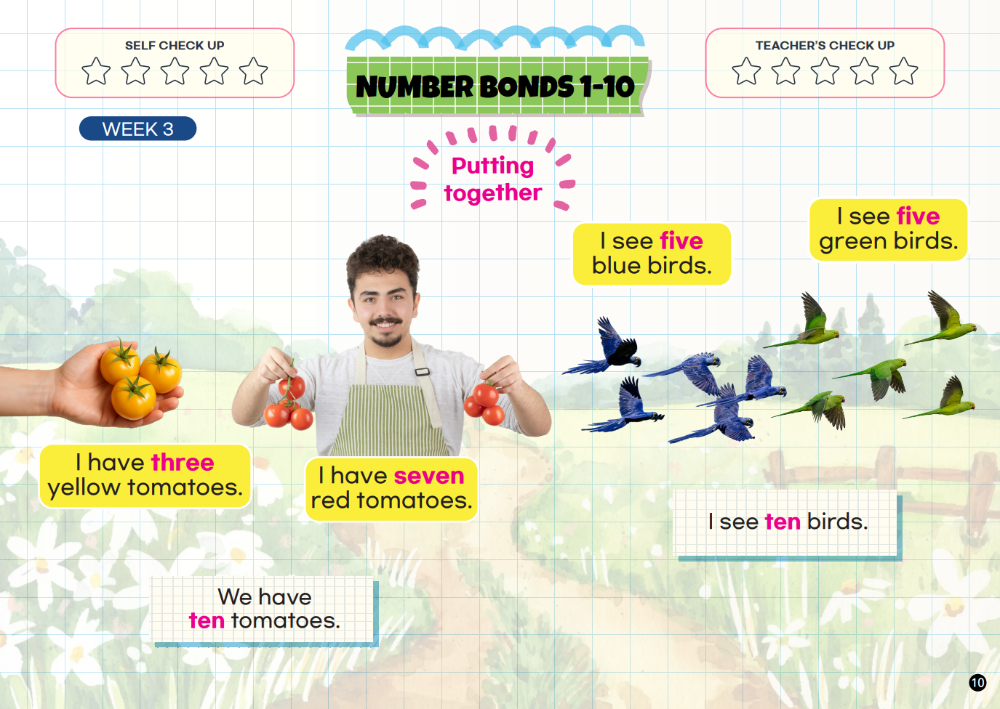
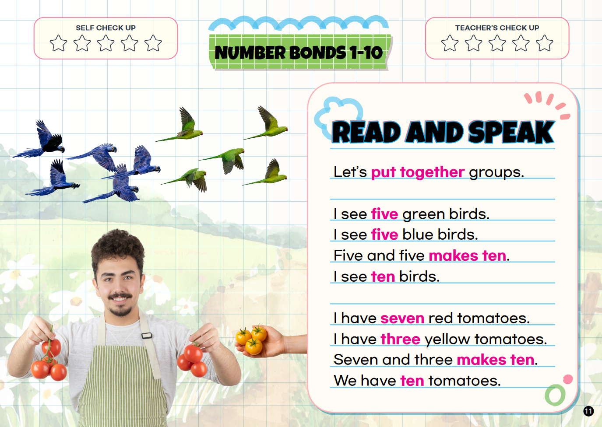
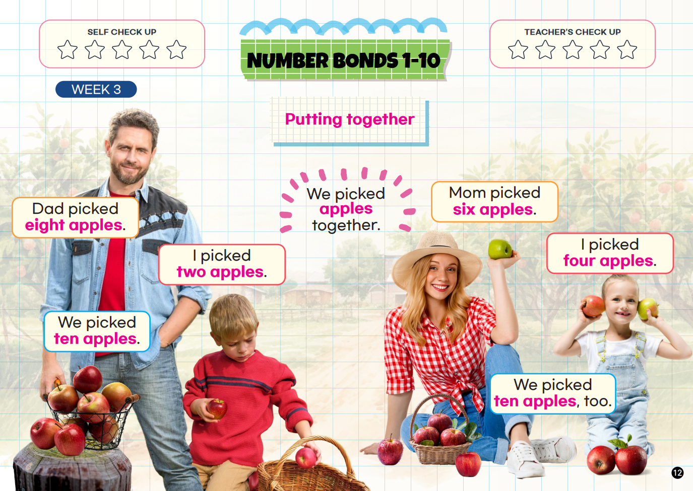
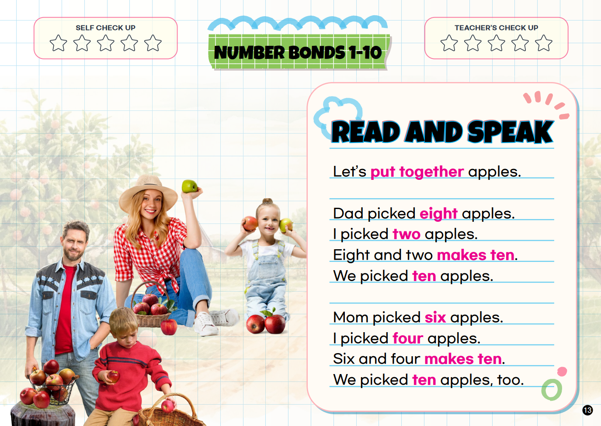

WEEK 3
Make Ten!
Put two groups together and explain the number bond.
Speak It!
“I have seven red tomatoes. I have three yellow tomatoes. Seven and three makes ten.”
5 + 5 = 107 + 3 = 108 + 2 = 106 + 4 = 10



